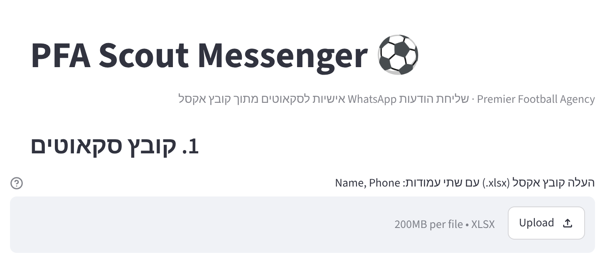
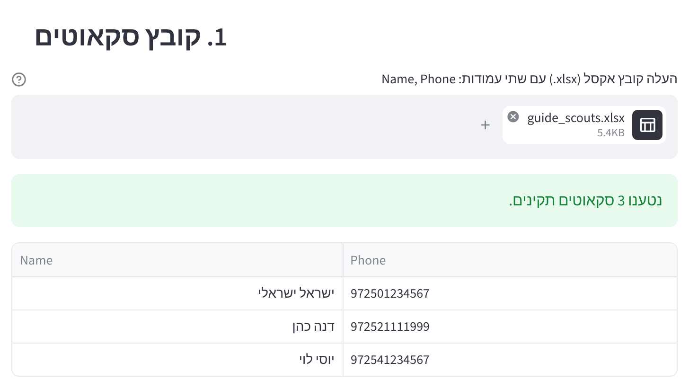
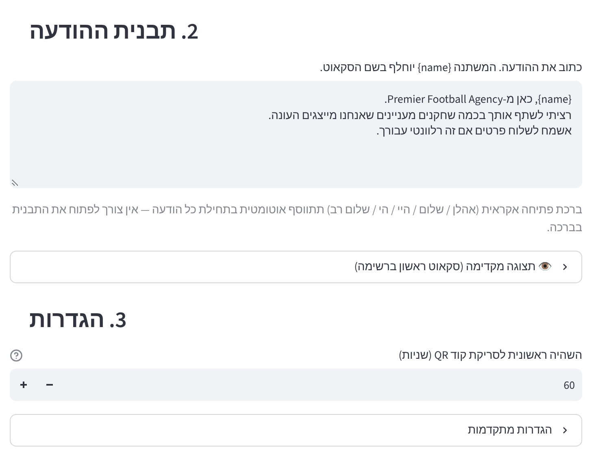
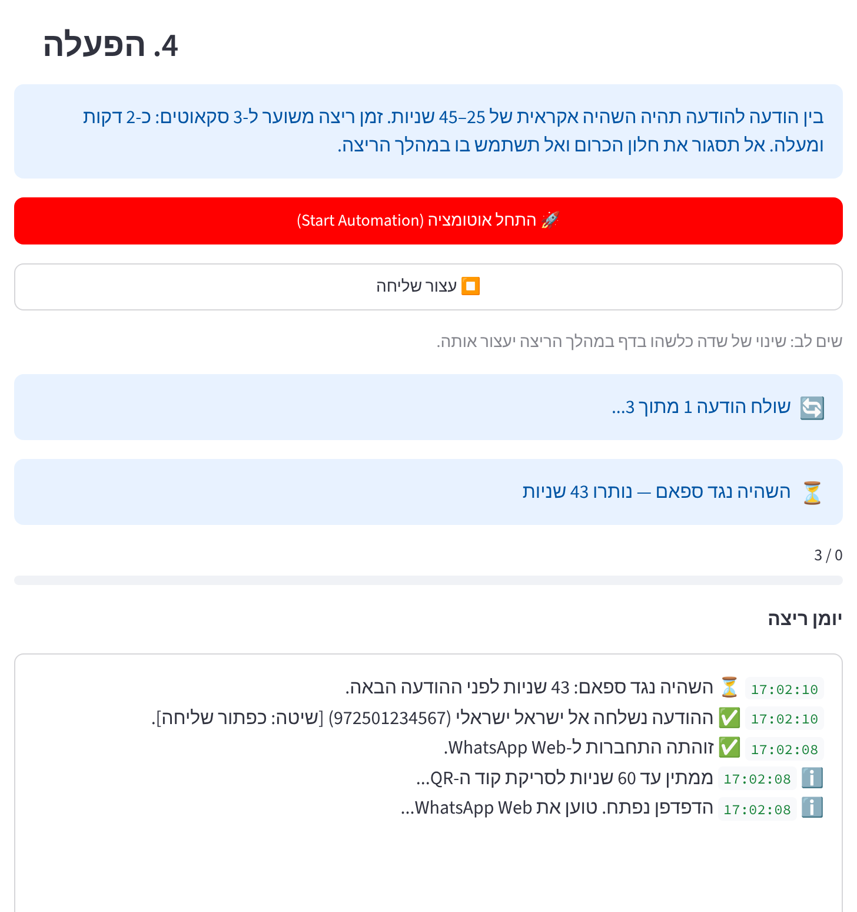
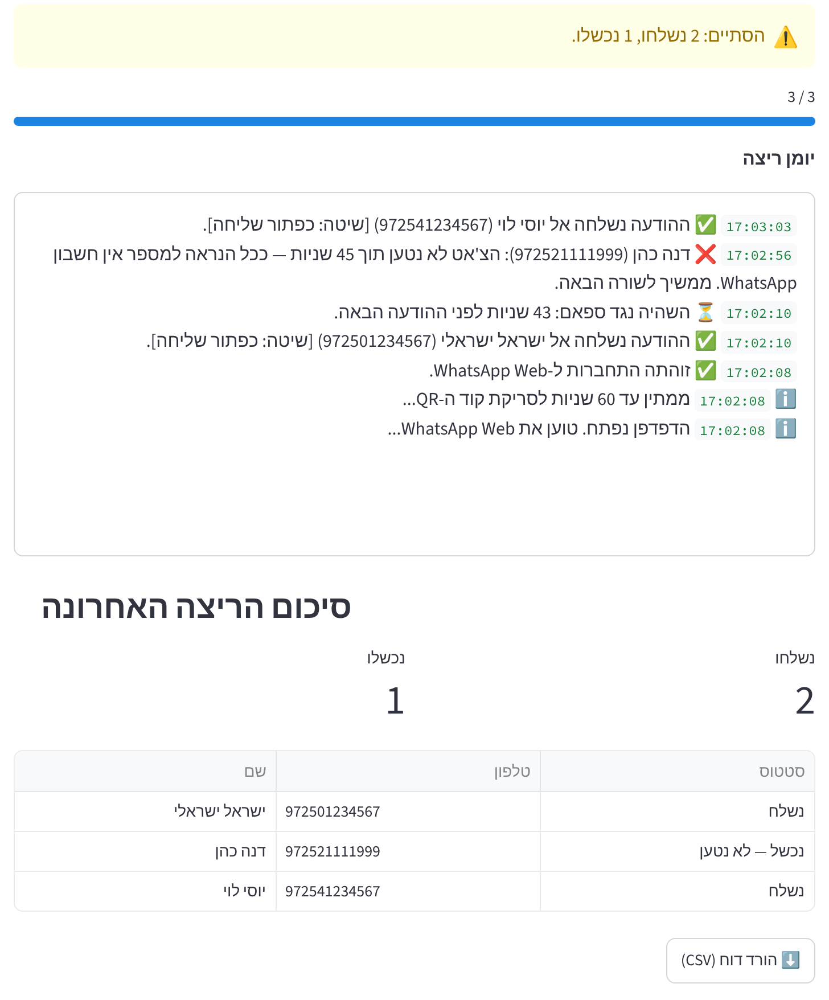

מדריך התקנה והפעלה למחשבי Windows
התוכנה שולחת הודעת WhatsApp אישית לכל סקאוט שמופיע בקובץ אקסל, בלי לשמור את המספרים באנשי הקשר. כותבים הודעה אחת, והתוכנה מחליפה בה את {name} בשם של כל סקאוט ושולחת דרך WhatsApp Web. בין הודעה להודעה יש הפסקה אקראית של 25 עד 45 שניות, כדי להקטין את הסיכון לחסימה.
| קובץ | מה זה |
|---|---|
| PFA_Guide.pdf | המדריך הזה. |
| START_PFA.bat | קובץ ההפעלה. לחיצה כפולה עליו מפעילה את התוכנה. ייתכן שיופיע בשם START_PFA בלבד, בלי הסיומת. |
| scouts_template.xlsx | תבנית אקסל ריקה לרשימת הסקאוטים. |
| app.py, requirements.lock, התיקייה bin | קבצי התוכנה ורכיב ההתקנה האוטומטית. אין לשנות, לשנות שם או למחוק אותם. |
כל מה שהתוכנה צריכה, כולל Python, מותקן אוטומטית בהפעלה הראשונה.
את שני השלבים האלה עושים פעם אחת בלבד בכל מחשב.
אם תפתחו את ה-ZIP בלחיצה כפולה ותפעילו משם את START_PFA, התוכנה לא תעבוד. קודם מחלצים, ואז מפעילים מהתיקייה שנוצרה.
אם Chrome כבר מותקן במחשב, דלגו על השלב הזה. אחרת, הורידו והתקינו אותו מ-https://www.google.com/chrome/.
התוכנה פותחת חלון Chrome נפרד משלה. הוא לא משפיע על ה-Chrome הרגיל שלכם.
השאירו אותו פתוח כל זמן העבודה. סגירה שלו סוגרת את התוכנה. אם הדפדפן לא נפתח לבד, פתחו אותו והקלידו את הכתובת http://localhost:8501.
בכל הפעלה התוכנה בודקת את עצמה. אם משהו בקבצים שלה התקלקל, היא מתקנת אותו לבד ומודיעה על כך בחלון השחור.

| פורמט המספר | דוגמה | תקין? |
|---|---|---|
| ישראלי, פורמט בינלאומי | 972501234567 | כן |
| ישראלי, פורמט מקומי | 0501234567 או 050-1234567 | כן, מומר אוטומטית |
| עם פלוס ורווחים | +972 50-123-4567 | כן |
| מספר מחו"ל, עם קידומת המדינה | 447911123456 (בריטניה) | כן |
| מספר מחו"ל בפורמט מקומי | 07911123456 | לא |
א. העלאת הקובץ. לחצו Browse files ובחרו את קובץ האקסל, או גררו אותו לתיבה. בדקו שהטבלה שמופיעה נכונה, ושאין אזהרות על שורות שידולגו.

ב. כתיבת ההודעה. כתבו את ההודעה בתיבה תבנית ההודעה. במקום שבו צריך להופיע שם הסקאוט, כתבו {name} בדיוק כך, באנגלית ובסוגריים מסולסלים.
ג. הגדרות.

ד. התחלת השליחה. לחצו על הכפתור האדום התחל אוטומציה. ייפתח חלון Chrome עם WhatsApp Web.
בחלון ה-Chrome יופיע קוד QR. סרקו אותו בטלפון:
החיבור נשמר במחשב, כך שבפעמים הבאות לא צריך לסרוק שוב.
ה. במהלך השליחה. מכאן הכל אוטומטי. ביומן הריצה רואים כל הודעה שנשלחה, כל כישלון, וספירה לאחור של ההפסקה עד ההודעה הבאה.

בסיום מופיע סיכום: כמה הודעות נשלחו, כמה נכשלו, וטבלה עם הסטטוס של כל סקאוט. בכפתור הורד דוח (CSV) שומרים את הטבלה כקובץ שנפתח באקסל.

התוכנה לא זוכרת למי כבר שלחה. אם תעלו שוב את אותו קובץ, כל הסקאוטים יקבלו את ההודעה שוב. לפני הרצה חוזרת, מחקו מהקובץ את מי שמופיע בדוח בסטטוס "נשלח".
"נשלח" אומר שההודעה יצאה מהמחשב. זה לא מבטיח שהיא נמסרה או נקראה. את זה רואים בטלפון, לפי הווי הכחולים.
| מה רואים | מה עושים |
|---|---|
| בחלון השחור: The program is running from inside the ZIP file | חלצו קודם את קובץ ה-ZIP (שלב 1), והפעילו מהתיקייה שנוצרה. |
| בחלון השחור: Program files are missing | חלק מהקבצים לא חולצו. מחקו את התיקייה, חלצו שוב את כל ה-ZIP עם "חלץ הכל", והפעילו מחדש. |
| בחלון השחור: Setting up the program failed | בדקו את החיבור לאינטרנט, כי ההפעלה הראשונה מורידה קבצים, והפעילו שוב. אם זה חוזר, שלחו צילום מסך של החלון השחור למי שמתחזק את התוכנה. |
| בחלון השחור: [BLOCKED] Windows blocked one of the program files | ההגנה Smart App Control של Windows 11 חסמה קובץ של התוכנה. ראו את התיבה "חסימה של Windows" מתחת לטבלה. |
| בחלון השחור: Rebuilding them, please wait | זה תקין. התוכנה זיהתה קבצים פגומים ומתקנת אותם לבד. חכו כמה דקות. |
| הודעה כחולה Windows protected your PC | More info ואז Run anyway (בעברית: מידע נוסף, ואז הפעל בכל זאת). |
| הדפדפן לא נפתח לבד | פתחו דפדפן והקלידו http://localhost:8501. |
| "שגיאה בהפעלת הדפדפן" | ודאו ש-Google Chrome מותקן ומעודכן (שלב 2). סגרו חלונות Chrome פתוחים של התוכנה מריצה קודמת. |
| שגיאה "חסרות העמודות" | הכותרות באקסל חייבות להיות Name ו-Phone. השתמשו בתבנית המצורפת. |
| הודעה נכשלה: "הצ'אט לא נטען" | למספר הזה כנראה אין WhatsApp, או שהמספר שגוי. אם כל ההודעות נכשלות כך: בדקו שהטלפון מחובר ב-WhatsApp Web, הגדילו את זמן ההמתנה בהגדרות המתקדמות, ופנו למי שמתחזק את התוכנה. ייתכן ש-WhatsApp שינו את האתר. |
| הודעה נכשלה: "הוקלדה אך WhatsApp לא שלח אותה" | ההודעה נכתבה אבל לא יצאה. אם זה קורה שוב ושוב, עצרו ופנו למי שמתחזק את התוכנה. |
| יש במחשב גרסה קודמת של התוכנה | מחקו את התיקייה הישנה והשתמשו רק בתיקייה החדשה. |
| WhatsApp מציג אזהרה, הגבלה או חסימה | עצרו מיד את השליחה ואל תנסו שוב באותו יום. ראו את פרק 8. |
| שוב צריך לסרוק קוד QR | זה תקין אם החיבור נותק מהטלפון, או אם הטלפון לא היה מחובר לאינטרנט במשך זמן רב. פשוט סורקים שוב. |
ב-Windows 11 יש הגנה בשם Smart App Control, שחוסמת קבצים שאין עליהם חתימה דיגיטלית. התוכנה בנויה כך שהיא משתמשת רק ברכיבים שההגנה מאשרת בדרך כלל, אבל אין לנו דרך להבטיח את זה מראש בכל מחשב.
אם בכל זאת מופיעה ההודעה [BLOCKED]:
תנאי השימוש של WhatsApp אוסרים שליחה אוטומטית. ההפסקות והברכות האקראיות מקטינות את הסיכון, אבל לא מבטלות אותו. בדרך כלל קודם מגיעה הגבלה זמנית, שבה אי אפשר לפתוח צ'אטים חדשים ליום עד כמה ימים, אבל גם חסימה קבועה אפשרית. WhatsApp גם מגבילים את מספר ההודעות שאפשר לשלוח לאנשים שלא עונים, והמספר המדויק לא פורסם.
בישראל אסור לשלוח "דבר פרסומת" בלי הסכמה מראש של הנמען, והפיצוי יכול להגיע עד 1,000 ש"ח להודעה. לפני שליחה בהיקף גדול, מומלץ לבדוק עם עורך דין אם ההודעות שלכם נחשבות פרסומת.